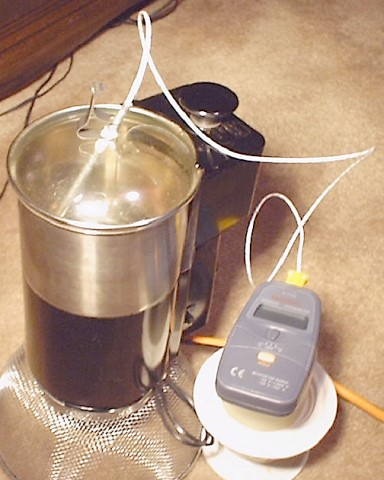

This example shows how to read (and plot) data from an external text file. This file is packaged together with the simulation in the EJS' generated JAR file.
The data corresponds to the cooling of hot water in an insulated (grey plot) and a regular (black plot) cup under the effect of the outdoor temperature (given by the blue plot). The data was kindly provided by Roger Frost (www.rogerfrost.com).
